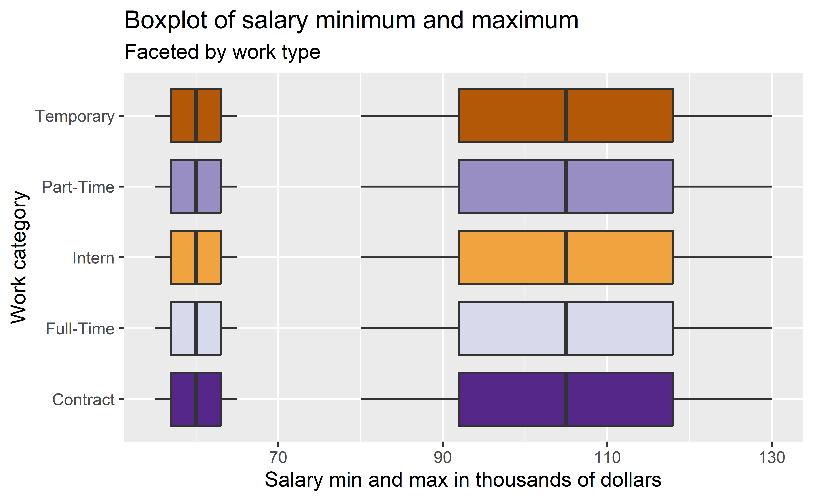
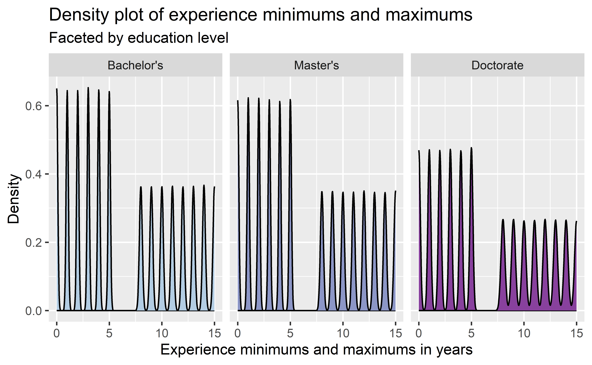

library(tidyverse)
library(ggplot2)
library(janitor)Time for everyone’s favorite: data cleaning.
Dataset information
The dataset is called the “Job description dataset”, and it was downloaded from Kaggle. It is listed under a CC0 license, and a formal citation can be found below. According to the creator, Ravender Singh Rana, the dataset is “a rich collection of artificially generated job postings designed to emulate the structure and content of real-world job listings.”
The dataset contains 1,615,940 rows and 23 columns. Each row represents a fabricated job listing. Columns of interest include:
Job ID: Unique identifier for each fabricated job listingExperience: Preferred years of experience for the job, in the format “xx to yy Years”Qualifications: Education requirements for this jobSalary Range: Range of compensation, in the format “$xxK-$yyK”Work Type: Type of employment, including Full-Time, Contract, Temporary, etc.
Setup
Run the following libraries.
And read in the data.
data <- read_csv("./data/job_descriptions.csv")
glimpse(data)Rows: 1,615,940
Columns: 23
$ `Job Id` <dbl> 1.089844e+15, 3.984541e+14, 4.816401e+14, 6.881927e…
$ Experience <chr> "5 to 15 Years", "2 to 12 Years", "0 to 12 Years", …
$ Qualifications <chr> "M.Tech", "BCA", "PhD", "PhD", "MBA", "MCA", "PhD",…
$ `Salary Range` <chr> "$59K-$99K", "$56K-$116K", "$61K-$104K", "$65K-$91K…
$ location <chr> "Douglas", "Ashgabat", "Macao", "Porto-Novo", "Sant…
$ Country <chr> "Isle of Man", "Turkmenistan", "Macao SAR, China", …
$ latitude <dbl> 54.2361, 38.9697, 22.1987, 9.3077, -35.6751, 50.503…
$ longitude <dbl> -4.5481, 59.5563, 113.5439, 2.3158, -71.5429, 4.469…
$ `Work Type` <chr> "Intern", "Intern", "Temporary", "Full-Time", "Inte…
$ `Company Size` <dbl> 26801, 100340, 84525, 129896, 53944, 23196, 26119, …
$ `Job Posting Date` <date> 2022-04-24, 2022-12-19, 2022-09-14, 2023-02-25, 20…
$ Preference <chr> "Female", "Female", "Male", "Female", "Female", "Ma…
$ `Contact Person` <chr> "Brandon Cunningham", "Francisco Larsen", "Gary Gib…
$ Contact <chr> "001-381-930-7517x737", "461-509-4216", "9687619505…
$ `Job Title` <chr> "Digital Marketing Specialist", "Web Developer", "O…
$ Role <chr> "Social Media Manager", "Frontend Web Developer", "…
$ `Job Portal` <chr> "Snagajob", "Idealist", "Jobs2Careers", "FlexJobs",…
$ `Job Description` <chr> "Social Media Managers oversee an organizations soc…
$ Benefits <chr> "{'Flexible Spending Accounts (FSAs), Relocation As…
$ skills <chr> "Social media platforms (e.g., Facebook, Twitter, I…
$ Responsibilities <chr> "Manage and grow social media accounts, create enga…
$ Company <chr> "Icahn Enterprises", "PNC Financial Services Group"…
$ `Company Profile` <chr> "{\"Sector\":\"Diversified\",\"Industry\":\"Diversi…Data cleaning
Complete data transformations, primarily to extract numbers such as salary range and experience from character strings. This shows off the wonderful world of regex.
cleaned_data <- data %>%
# Clean column names
clean_names() %>%
# Break experience column into minimum and maximum experience
mutate(
experience_min = str_extract(experience, "^[[:digit:]]+"),
experience_max = str_extract(experience, "[[:digit:]]+ Years"),
experience_max = str_extract(experience_max, "^[[:digit:]]+")
) %>%
mutate(
experience_min = as.numeric(experience_min),
experience_max = as.numeric(experience_max)
) %>%
relocate(c(experience_min, experience_max), .after=experience) %>%
# Break qualifications into broader categories
mutate(
education_level = if_else(str_detect(qualifications, "^B"), "Bachelor's", NA),
education_level = if_else(str_detect(qualifications, "^M"), "Master's", education_level),
education_level = if_else(str_detect(qualifications, "^Ph"), "Doctorate", education_level)
) %>%
relocate(education_level, .after = qualifications) %>%
# Break salary_range into minimum and maximum salary
mutate(
salary_min = str_extract(salary_range, "^\\$[[:digit:]]+K"),
salary_max = str_extract(salary_range, "-\\$[[:digit:]]+K"),
salary_min = str_extract(salary_min, "[[:digit:]]+"),
salary_max = str_extract(salary_max, "[[:digit:]]+")
) %>%
mutate(
salary_min = as.numeric(salary_min),
salary_max = as.numeric(salary_max)
) %>%
relocate(c(salary_min, salary_max), .after=salary_range)
glimpse(cleaned_data)Rows: 1,615,940
Columns: 28
$ job_id <dbl> 1.089844e+15, 3.984541e+14, 4.816401e+14, 6.881927e+1…
$ experience <chr> "5 to 15 Years", "2 to 12 Years", "0 to 12 Years", "4…
$ experience_min <dbl> 5, 2, 0, 4, 1, 4, 3, 2, 2, 1, 3, 4, 3, 1, 1, 4, 5, 0,…
$ experience_max <dbl> 15, 12, 12, 11, 12, 12, 15, 8, 9, 10, 10, 12, 15, 8, …
$ qualifications <chr> "M.Tech", "BCA", "PhD", "PhD", "MBA", "MCA", "PhD", "…
$ education_level <chr> "Master's", "Bachelor's", "Doctorate", "Doctorate", "…
$ salary_range <chr> "$59K-$99K", "$56K-$116K", "$61K-$104K", "$65K-$91K",…
$ salary_min <dbl> 59, 56, 61, 65, 64, 59, 63, 65, 65, 60, 57, 64, 65, 5…
$ salary_max <dbl> 99, 116, 104, 91, 87, 93, 103, 102, 102, 80, 104, 98,…
$ location <chr> "Douglas", "Ashgabat", "Macao", "Porto-Novo", "Santia…
$ country <chr> "Isle of Man", "Turkmenistan", "Macao SAR, China", "B…
$ latitude <dbl> 54.2361, 38.9697, 22.1987, 9.3077, -35.6751, 50.5039,…
$ longitude <dbl> -4.5481, 59.5563, 113.5439, 2.3158, -71.5429, 4.4699,…
$ work_type <chr> "Intern", "Intern", "Temporary", "Full-Time", "Intern…
$ company_size <dbl> 26801, 100340, 84525, 129896, 53944, 23196, 26119, 40…
$ job_posting_date <date> 2022-04-24, 2022-12-19, 2022-09-14, 2023-02-25, 2022…
$ preference <chr> "Female", "Female", "Male", "Female", "Female", "Male…
$ contact_person <chr> "Brandon Cunningham", "Francisco Larsen", "Gary Gibso…
$ contact <chr> "001-381-930-7517x737", "461-509-4216", "9687619505",…
$ job_title <chr> "Digital Marketing Specialist", "Web Developer", "Ope…
$ role <chr> "Social Media Manager", "Frontend Web Developer", "Qu…
$ job_portal <chr> "Snagajob", "Idealist", "Jobs2Careers", "FlexJobs", "…
$ job_description <chr> "Social Media Managers oversee an organizations socia…
$ benefits <chr> "{'Flexible Spending Accounts (FSAs), Relocation Assi…
$ skills <chr> "Social media platforms (e.g., Facebook, Twitter, Ins…
$ responsibilities <chr> "Manage and grow social media accounts, create engagi…
$ company <chr> "Icahn Enterprises", "PNC Financial Services Group", …
$ company_profile <chr> "{\"Sector\":\"Diversified\",\"Industry\":\"Diversifi…Visualization 1: Salary range and work type
Let’s see if we can uncover how realistic this data is. The visualization below shows the range of minimum and maximum salaries, faceted by work type.
cleaned_data %>%
ggplot() +
geom_boxplot(aes(x = work_type, y = salary_min, fill = work_type)) +
geom_boxplot(aes(x = work_type, y = salary_max, fill = work_type)) +
coord_flip() +
labs(
y = "Salary min and max in thousands of dollars",
x = "Work category",
title = "Boxplot of salary minimum and maximum",
subtitle = "Faceted by work type"
) +
theme(legend.position="none") +
scale_fill_discrete(type = c(
`Temporary` = "#b35806",
`Part-Time` = "#998ec3",
`Intern` = "#f1a340",
`Full-Time` = "#d8daeb",
`Contract` = "#542788"
))
Colors were chosen using ColorBrewer to ensure that they are legible for people who are colorblind. Given that, regardless of work type, all jobs have the same quartile breakdowns for minimum and maximum salary range, it’s safe to say that this was rather simply procedurally generated and therefore not of much use in the real world.
Visualization 2: Experience and education
What about experience and education? In real life, we might expect that the higher the level of education, the fewer years of experience required.
cleaned_data %>%
ggplot() +
geom_density(aes(x = experience_min, fill = education_level)) +
geom_density(aes(x = experience_max, fill = education_level)) +
facet_wrap( ~ factor(
education_level,
levels = c("Bachelor's", "Master's", "Doctorate")
)) +
theme(legend.position="none") +
scale_fill_discrete(type = c(
`Bachelor's` = "#b3cde3",
`Master's` = "#8c96c6",
`Doctorate` = "#88419d"
)) +
labs(
y = "Density",
x = "Experience minimums and maximums in years",
title = "Density plot of experience minimums and maximums",
subtitle = "Faceted by education level"
) 
Colors were again chosen using ColorBrewer. Given that the experience levels have the same density patterns regardless of education level, this data also is not reflective of the real world. One additional insight is that more jobs were generated with a Bachelor’s requirement than with a Master’s requirement than with a Doctorate requirement.
Conclusion
Given the uniformity of data, this dataset appears to have use as a data cleaning exercise more than anything else.
References
Brewer, C., Harrower, M., Sheesley, B., Woodruff, A., & Heyman, D. (2013). ColorBrewer: Color advice for maps. https://colorbrewer2.org/
Jon, P. (n.d.). Mathematician analyzing data [Graphic]. Wikimedia Commons. Retrieved December 12, 2024, from https://commons.wikimedia.org/wiki/File:Mathematician_analyzing_data._-DPLA-_60af5ced0800f6f7d6c99b5587a9ae0e.jpg
Rana, R. S. (2023). Job dataset: A comprehensive job dataset for data science, research, and analysis [Dataset]. Kaggle. https://doi.org/10.34740/kaggle/ds/3749643